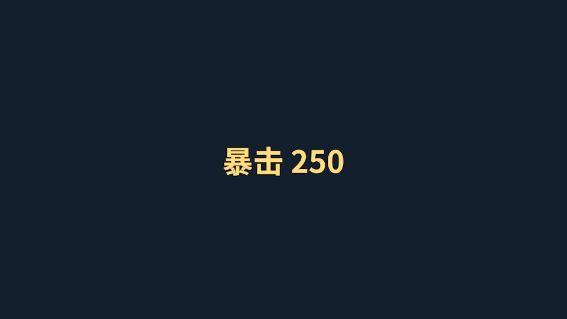
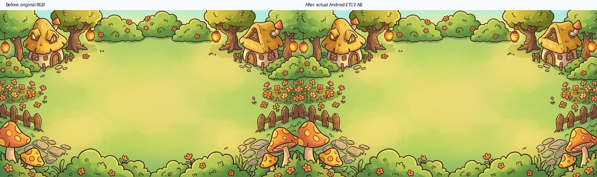
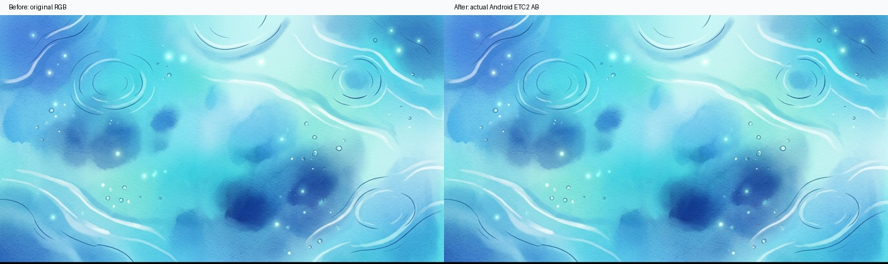
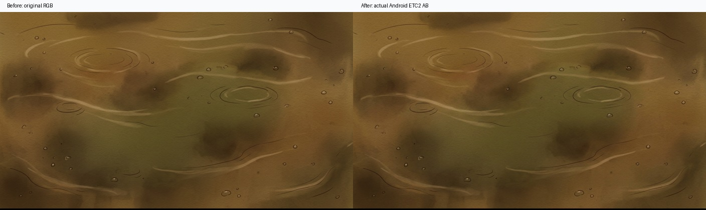
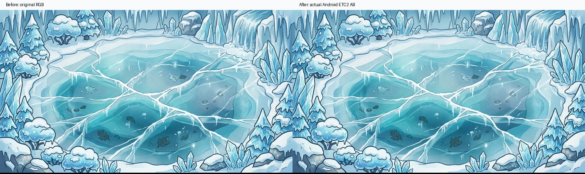
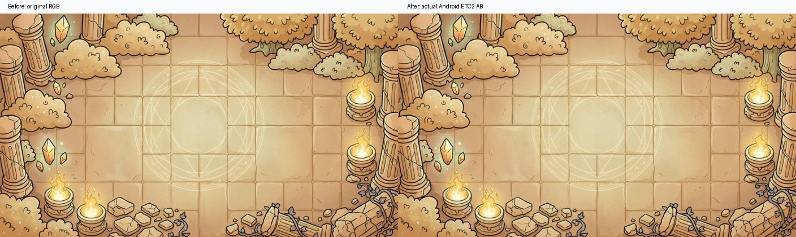

Android资源62.14 → 33.44 MiB
本轮减少28.69 MiB约46.2%
战斗特效包16.18 MiB → 9.6 KiB
修改内容
飘字正文与四向描边同步使用 NotoSansCJKsc-Bold 字体及对应共享材质。明朝体从Unity资产移除，特效包不再嵌入旧字体，统一引用 font_cjk。
第二至第六章生成1408×792 RGB运行时副本，宽高满足块压缩且严格16:9。实际Android AB为ETC2_RGB4，PC为DXT1。原美术文件、第一章图集、专属Shader与材质调参值保留。
| Android资源包 | 修改前 MiB | 修改后 MiB |
|---|
| background_chapter02_village | 2.818 | 0.402 |
| background_chapter03_lake | 3.268 | 0.483 |
| background_chapter04_swamp | 2.563 | 0.390 |
| background_chapter05_ice | 3.439 | 0.529 |
| background_chapter06_temple | 2.684 | 0.445 |
| battle_feedback | 16.178 | 0.009 |
真实AB与渲染验证
PC、Android各37业务包构建成功；直接解析二进制确认五张背景每张纹理数据为557568字节，特效包不含Font对象。隔离冷加载真实PC AB绘制五章背景与Noto飘字，动态和文字可见；重跑Android构建后二进制SHA256全部一致。

实际PC AB飘字正文与四向描边的隔离预览这里是AB资源体积，不是APK大小。未启动Play或切换用户场景；Android真机、正式APK、首次UI加载和重复进出战斗尚未验收。
压缩画面对比
左侧为等尺寸原画RGB，右侧为解码真实Android AB的ETC2纹理。平均像素误差0.54%～1.17%，PSNR34.56～42.81dB。压缩与重采样有损，数值不代替主观画质判断。

Chapter02_Village-comparison
Chapter03_Lake-comparison
Chapter04_Swamp-comparison
Chapter05_Ice-comparison
Chapter06_Temple-comparison制作与复验入口
GameResourceBuild.Configure在分包前执行字体与背景制作门禁，旧章节导入入口复用它；源图SHA标识、尺寸、平台格式均检查。配置重跑不会覆盖材质特效参数。
game.resources.compression-check
game.resources.compression-preview
game.background.audit
完整实现说明与验证边界